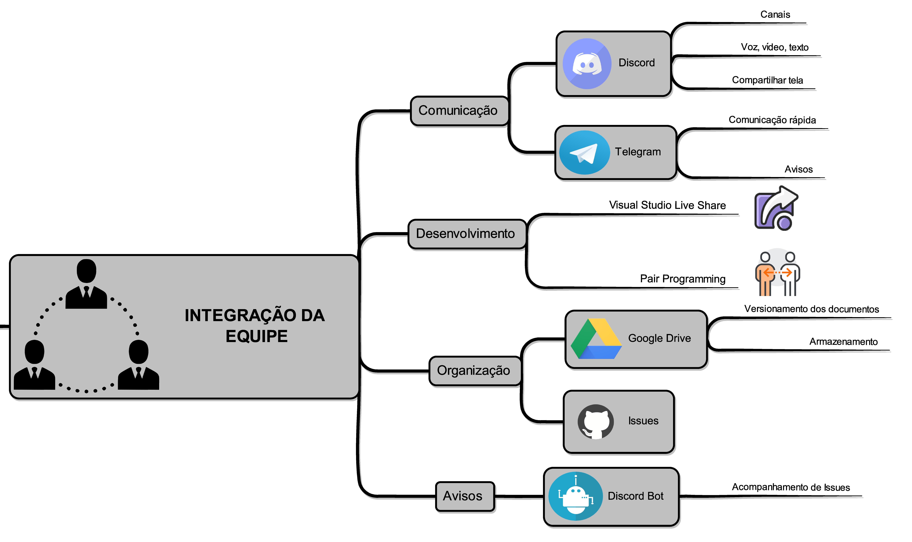
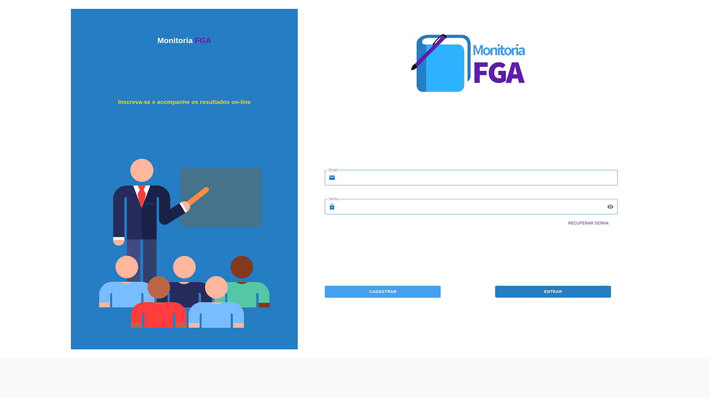
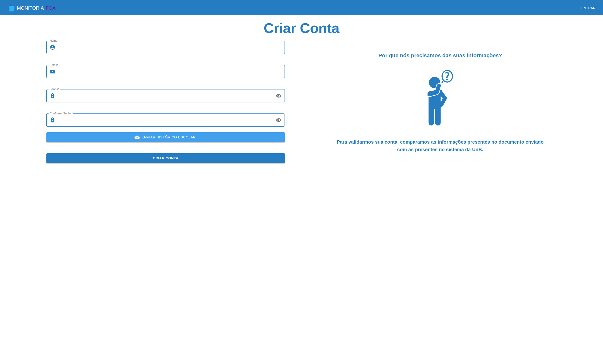
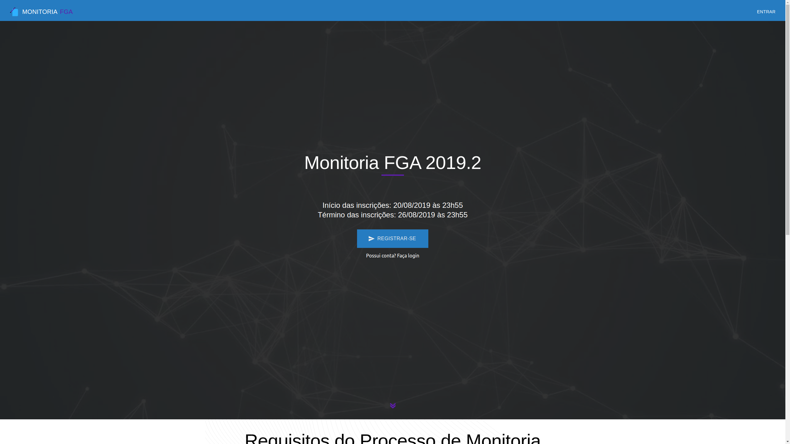
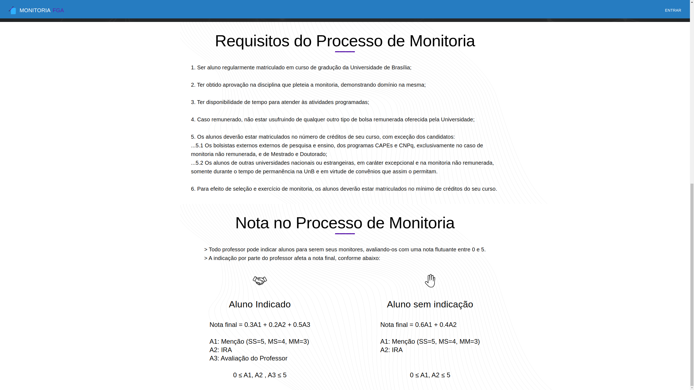
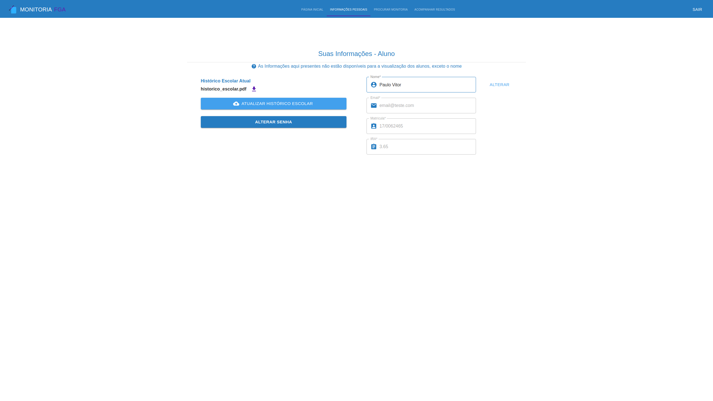
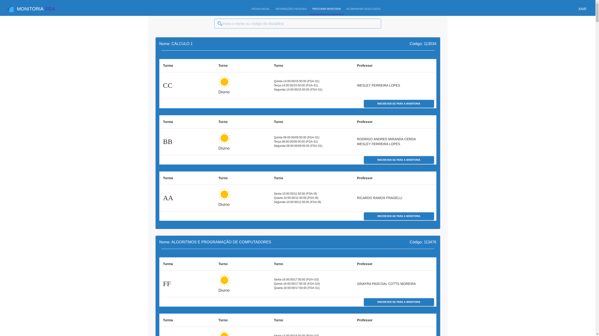
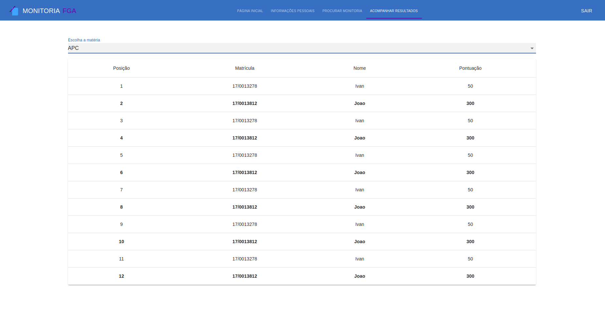

Apresentação Final
Histórico de Revisão:
| Data | Versão | Descrição | Autor |
|---|---|---|---|
| 17/11/19 | 0.1 | Adicionando introdução e discorrendo sobre Gerência e funcionalidades | Paulo Vitor, João Rossi |
| 17/11/19 | 0.2 | Adicionando a explicação do produto, desenvolvimento e trabalho em equipe | Paulo Vitor, João Rossi |
| 17/11/19 | 0.3 | Adicionando imagens do produto | Paulo Vitor, João Rossi |
| 18/11/19 | 0.4 | Revisão e adição no documento, novas imagens | Welison Regis |
1. Introdução
Este documento refere-se a apresentação final do grupo "A Monitoria" da matéria Arquitetura e Desenho de Software. Tem-se como objetivo demonstrar os principais pontos do trabalho realizado pela equipe ao longo do semestre, não só demonstrando o produto final mas também descrevendo um pouco sobre as metodologias utilizadas e artefatos decorrentes do ciclo de vida que envolve o desenvolvimento de software tendo como foco principalmente os artefatos típicos de Desenho de Software, como padrões de projeto utilizados, etc.
Página com todos os artefatos
Visualizar todos os artefatos
2. O produto
A ideia do produto passou por uma seleção criteriosa, utilizando 3 métodos para a escolha, sendo eles:
Foram utilizados os documentos acima para levantar necessidades, fluxos de trabalho e possíveis problemas que seriam encontrados no decorrer do projeto, sendo a escolha final baseada numa votação entre os membros do grupo com opiniões baseadas nos levantamentos finais da documentação auxiliar.
Após decidido pelo tema "A Monitoria", foi criado também um Documento de Visão para ajudar o processo de entendimento do escopo do projeto, além de alguns artefatos para elicitação, como Protótipo e Questionário para ajudar a visualização do levantamento do escopo assim como a opinião de futuros usuários sobre o escopo e algumas funcionalidades do projeto.
Para ajudar a equipe a entender como o produto funcionaria a um nível de mercado, a priori, foi criado um documento de Benchmarking para a equipe definir os diferenciais do produto em relação aos concorrentes no mercado.
Além da posição no mercado em que o produto se encontraria, foi escolhido levantar os possíveis custos e lucros do produto com um documento de Estimativas de Custo.
Por final, a equipe montou um documento de Identidade Visual para manter um padrão bem definido sobre o design do produto.
3. Trabalho em Equipe
Com o escopo começando a melhor se definir, a equipe começou a desenhar de maneira adequada as Metodologias que serão aplicadas no desenvolvimento durante a disciplina. A equipe utilizou três diferentes metodologias, o Scrum, o Extreme Programming e o Kanban, além de outros artefatos de suporte, todos aliados a tecnologias voltadas para a integração da equipe, conforme pode-se notar no diagrama abaixo:

O projeto foi dividido em 4 repositórios:
- Wiki - Nesse repositório toda a documentação foi mantida;
- Front-end - Repositório dedicado apenas ao front-end do projeto, em React;
- Back-end - Repositório com o código da API;
- Web Crawler - Repositório do Web Crawler para salvar as matérias oferecidas na FGA;
4. Gerência
O presente tópico busca definir e formalizar as metodologias de trabalho que foram aplicadas no desenvolvimento do projeto. Nesse sentido, quanto as metodologias pertinentes ao escopo de elaboração da aplicação, podemos citar o scrum, kanban, extreme programming. Já para as metodologias de gerência temos, reuniões, quadro de conhecimento e avaliações de desempenho com burndown, velocity. Para um melhor detalhamento sobre metodologia visite a página de Metodologias em nossa Wiki.
Fora as metodologias voltadas ao gerenciamento de equipe, o grupo preocupou-se em subsidiar artefatos de gerência ligadas a qualidade e padronização de condultas de codificação, como pode-se citar o Plano de Gerenciamento de Configuração. Além disso, outros artefatos foram essenciais para a gerência do projeto, como, por exemplo, o andamento do projeto com o Diagrama de Gantt, entre outros elaborados na dinâmica II.
5. Funcionalidades
O escopo do projeto foi definido entre os membros do grupo em conjunto com a professora Milene Serrano. As funcionalidades foram definidas a partir de um questionario para alunos e professores da universidade. As funcionalidades foram também definidas por meio de um protótipo o que facilitou a limitação de escopo do projeto.
6. Desenvolvimento
Entrando na competência do desenvolvimento, a equipe se ateve primeiro ao gerenciamento do projeto com documentos para o controle e definição da aplicação para depois criar diagramas UML do projeto, seguido das especificações dos padrões para a solução dos problemas que seriam encontrados durante o decorrer do projeto e por fim, um documento de arquitetura para falar da integração e funcionamento deste produto software em suas 3 frontes principais: Web Crawler, Front-end e Back-end.
6.1 Diagramas Estáticos e Dinâmicos
Foram feitos diagramas UML estáticos e dinâmicos, para ter a representação do produto em diferentes níveis de detalhes.
6.1.1 Diagramas Estáticos
6.1.2 Diagramas Dinâmicos
6.2 Patterns
No que compete a padrões de projeto, a equipe selecionou alguns específicos para resolver os problemas do nosso produto. Foram utilizados diferentes padrões em nossos 3 repositórios e aqui tem-se o detalhamento de cada um:
6.3 Documento de Arquitetura de Software
Após um escopo bem definido e com diversos artefatos que subsidiam escolhas arquiteturais ao projeto, começou-se a elaborar o Documento de Arquitetura para ajudar no entendimento do funcionamento do frontend, backend e do crawler e como ocorreria essa integração entre elas e o funcionamento de cada uma.
7. O produto
Página de Login

Página de Cadastro

Página Inicial
 Continuação: 
Página de Informações Pessoais

Página de Cadastro em Monitoria

Página de Resultados

8. Referências
-
SERRANO, Milene. Desenho - Aulas 01 a 30. 2º/2019. Material apresentado para a disciplina de Desenho e Arquitetura de Software no curso de Engenharia de Software da UnB, FGA. ↩
-
DESENVOLVIMENTO ÁGIL. Scrum. [S. l.], 2014. Disponível aqui. Acesso em: 4 set. 2019. ↩
-
DIAGRAMS, UML. . In: UML Class and Object Diagrams Overview. [S. l.]: [s. n.], 19 set. 2019. Disponível em: https://www.uml-diagrams.org/class-diagrams-overview.html Acesso em: 19 set. 2019. ↩
-
REFACTORING, GURU. Behavioral Design Patterns: Behavioral design patterns are concerned with algorithms and the assignment of responsibilities between objects. Russia. 2019. Disponível: https://refactoring.guru/design-patterns/behavioral-patterns. Acesso em: 20 out. 2019. ↩